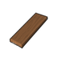
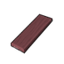
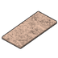
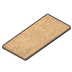
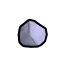

塑料级·原始·柏木板材 CypressPlank
塑料级家具建筑420防具14穿戴件8近战工具15其它1共458件 价值1.3 质量0.29 护甲0.70/1.10/0.05 利钝0.30/0.80
Vile's Wood You Please · def自带 · Things/VileWood/NewPlanksStacked
塑料级·原始·柳木板材 WillowPlank
塑料级家具建筑420防具14穿戴件8近战工具15其它1共458件 价值1.3 质量0.25 护甲0.70/1.40/0.05 利钝0.30/0.80
Vile's Wood You Please · def自带 · Things/VileWood/NewPlanksStacked

塑料级·原始·红木木板 RedWoodPlank
塑料级家具建筑420防具14穿戴件8近战工具15其它1共458件 价值3.5 质量0.25 护甲0.60/1.20/0.05 利钝0.30/0.80
Vile's Wood You Please · def自带 · Things/VileWood/NewPlanksStacked

塑料级·原始·刨花板 ChipBoard
塑料级家具建筑419防具14穿戴件8近战工具15其它1共457件 价值0.9 质量0.30 护甲0/0.70/0.05 利钝0.30/0.70
Vile's Wood You Please · def自带 · Things/VileWood/OSB

塑料级·原始·木板 WoodPlank
塑料级家具建筑419防具14穿戴件8近战工具15其它1共457件 价值1.2 质量0.30 护甲0.80/1/0.05 利钝0.40/0.80
Core_SK · def自带 · Things/VileWood/Plywood

原料级·原始·方铅矿 Anglesite
不可塑形仅配方原料 价值4 质量0.30 护甲—/—/— 利钝0.40/1.60
Core_SK · 按消耗它的配方研究档 · Things/Item/Ores/Anglesite



原料级·原始·黄铜矿 Copper
不可塑形仅配方原料 价值2 质量0.30 护甲—/—/— 利钝0.70/2
Core_SK · 按消耗它的配方研究档 · Things/Item/Ores/Copper